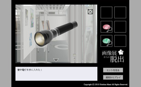
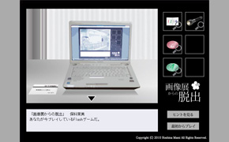

Portfolio * brighter and brighter
 脱出ゲーム「画像展からの脱出」
脱出ゲーム「画像展からの脱出」
- ・制作期間
- 2010年5月11日〜5月18日
- ・使用ソフト
- Illustrator/Flash/Photoshop
- ・ジャンル
- 脱出ゲーム（ブラウザゲーム）
- ・コンセプト
- 1.展示会をより楽しんでもらえるゲーム
2.従来の脱出ゲームでは不可能な試み - ・備考
- 単独制作
2010年5月10日から23日にかけて、九州大学芸術工学部画像設計学科3年生の有志で、九州大学サテライトルネットにて開催した展示会「brimage」に出展した作品です。
脱出ゲームは通常プレイヤー毎にプレイする場所が違うものですが、今回はプレイする場所を固定できることから、 プレイする場所＝展示会会場をゲームの舞台に設定しました。それにより、展示会会場のインフォメーションを兼ねたゲームにすることや、 現実とゲームをリンクさせる（具体的には、ゲームのヒントを現実に隠す）ことに挑戦することが出来ました。
詳細はコチラ（pdfファイルが開きます）
ゲームをプレイする
※但し、ゲームの性質上途中でヒントが不足します。
※展示会場でプレイすることに意味がある作りになっているためです。
 